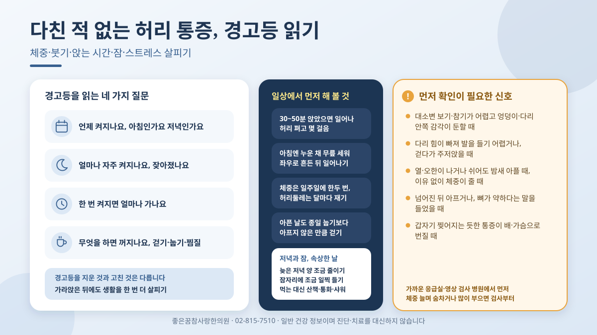

이종호 한의사 감수좋은꿈참사랑한의원 대표원장 (한의사 면허번호 19769)발행 2026-11-26 · 수정 2026-11-26
이 글의 차례
저녁 설거지를 마치고 허리를 펴는 순간, 뻐근한 기운이 등을 타고 올라옵니다. 넘어진 것도, 무거운 것을 든 것도 아닌데 왜 아플까 싶어 괜히 허리를 몇 번 두드려 보게 됩니다.
이렇게 뚜렷한 계기 없이 생긴 허리 통증을 저는 몸이 켜 주는 경고등이라고 설명드립니다. 아픈 자리를 달래는 것과 함께 그 불을 켠 생활을 같이 살펴야, 같은 불이 다시 들어오는 일을 줄이는 데 도움이 될 수 있습니다.
진료실에서 평소와 똑같이 지냈는데 아프다는 말씀을 자주 듣습니다. 그 말씀이 맞습니다. 그래서 더 답답하실 겁니다. 이유를 모르는 통증은 언제 또 올지 몰라 마음까지 지치게 하니까요.
왜 통증을 경고등이라고 할까요
제 차는 십오 년이 넘은 오래된 차입니다. 계기판에 경고등이 자꾸 들어와 정비소에 가면, 기계를 연결해 그 불을 지워 줍니다. 고치려면 수리비가 너무 많이 나온다고 해서 저는 불만 지우고 다시 탑니다.
그러면 몇 달 뒤 그 불이 또 들어옵니다. 다시 가서 지우고, 또 탑니다. 고장 난 곳은 그대로이니 불이 다시 켜지는 것이 당연하지요. 저는 아마 끝내 고치지 않고 타다가 언젠가 차를 바꾸게 될 겁니다.
허리 통증도 닮은 데가 있습니다. 아프지 않게만 만들면 경고등을 지운 것과 비슷합니다. 불을 켠 이유가 그대로 남아 있다면, 언젠가 같은 자리에 불이 다시 들어올 수 있습니다.
차는 바꿀 수 있어도 허리는 바꿀 수 없습니다. 그래서 저는 통증을 줄이는 일만큼, 왜 불이 들어왔는지를 함께 찾는 일을 놓치지 않으려 합니다.
왜 다친 적도 없는데 허리가 아플까요
저는 통증을 크게 두 갈래로 나누어 말씀드립니다. 하나는 넘어지거나 부딪히거나 삐끗해서 생긴 통증입니다. 원인이 몸 밖에 있어서 어디를 다쳤는지, 대략 몇 주쯤 걸릴지 가늠하기가 비교적 쉽습니다.
다른 하나는 평소처럼 집안일을 하고 평소처럼 앉아 있다가 생긴 통증입니다. 안 하던 일을 하셨느냐고 여쭈면 늘 하던 일이라고 하십니다. 바깥에서 들어온 원인이 없으니, 아플 이유가 몸 안쪽에 조금씩 쌓여 왔다고 봐야 합니다.
넘어져서 생긴 통증이라면 다친 날을 또렷이 기억하십니다. 그런데 이런 통증은 언제부터였는지 여쭈면 한참 생각하십니다. 날짜가 흐릿하다는 것 자체가 하나의 단서입니다.
이런 통증은 그날 한 동작 때문이라기보다, 그 동작을 견디던 몸의 여유가 줄어든 결과일 때가 많습니다. 같은 일을 했는데 어제는 괜찮고 오늘은 아픈 까닭이 여기에 있습니다.
여유를 줄이는 것은 대개 생활 속에 있습니다. 몇 달 사이 늘어난 체중, 저녁마다 무거워지는 붓기, 길어진 앉는 시간, 자주 끊기는 잠과 쌓인 스트레스 같은 것들입니다. 나이가 들며 근육이 줄면 같은 일에도 몸이 더 애를 씁니다.
왜 허리가 아픈데 체중과 붓기를 여쭐까요
허리가 아파 오신 분께 요즘 체중이 어떠시냐고 여쭈면 의아해하십니다. 그런데 몇 달 사이 몸이 부쩍 불었다면, 허리가 날마다 지고 다니는 짐도 그만큼 늘어난 셈입니다.
갱년기 무렵에는 여성호르몬이 줄면서 지방이 배 쪽으로 쌓이기 쉬워진다고 알려져 있습니다. 배가 앞으로 나오면 몸의 무게가 앞으로 쏠려 허리 뒤쪽이 더 애를 쓰게 된다고 설명하기도 합니다. 잠도 자주 깨는 시기라 몸이 쉴 틈이 줄어듭니다.
몸이 무거우면 덜 움직이게 되고, 덜 움직이면 저녁마다 더 붓는 날이 이어지기 쉽습니다. 붓기와 체중, 허리 통증이 서로 꼬리를 무는 셈이지요. 그래서 어느 한 고리라도 먼저 느슨하게 풀어 보자고 말씀드립니다.
스트레스도 한몫합니다. 예전에는 속상한 일을 이것저것으로 나누어 풀던 분이, 어느 시기부터는 먹는 것 하나로 다 푸시게 됩니다. 차라리 체하기라도 하면 덜 드실 텐데, 속은 멀쩡하니 자꾸 들어갑니다.
살을 빼야 한다는 것을 몰라서 못 빼는 분은 거의 없습니다. 저는 그럴 때 "그게 되는 거였으면 여기까지 왔겠어요?" 하고 그 마음부터 알아 드립니다. 그다음에 지금 할 수 있는 것을 작게 나누어 함께 정합니다.
경고등을 읽는 네 가지 질문
경고등은 지우기 전에 먼저 읽어야 합니다. 저는 허리 통증을 읽을 때 네 가지를 여쭙니다. 언제 켜지는지, 얼마나 자주 켜지는지, 한 번 켜지면 얼마나 가는지, 무엇을 하면 꺼지는지입니다.
아침에 일어날 때 켜지는 불과 저녁 무렵에 켜지는 불은 이야기가 다릅니다. 아침이라면 밤새 굳은 몸을, 저녁이라면 하루 동안 쌓인 피로와 붓기를 먼저 떠올리게 됩니다.
한 달에 한 번 켜지던 불이 일주일에 두세 번으로 잦아졌다면, 몸의 여유가 그만큼 줄었다는 뜻일 수 있습니다. 한 번 켜지면 며칠씩 꺼지지 않는 불도 마찬가지입니다.
무엇을 하면 꺼지는지도 단서가 됩니다. 조금 걸으면 풀리는지, 누워야 가라앉는지, 따뜻하게 하면 덜한지에 따라 살필 곳이 달라집니다. 이 네 가지를 적어 오시면 진료가 한결 빨라집니다.
아침마다 30분 넘게 뻣뻣하고 움직이면 오히려 풀리는 일이 몇 달째 이어진다면, 염증성 질환 같은 다른 원인이 없는지 병원 검사를 함께 권하기도 합니다.
아프지 않게 된 뒤가 더 조심스러운 이유
다친 적 없이 생긴 허리 통증도 치료를 받으며 가라앉는 분들이 계십니다. 그런데 저는 그때가 오히려 조심스럽습니다. 아프지 않으니 다 나았다고 여기기 쉽기 때문입니다.
통증이 줄어든 것은 반가운 일입니다. 다만 불을 켠 이유, 예를 들어 늘어난 체중이나 굳은 몸, 끊기는 잠이 그대로라면 비슷한 일이 다시 찾아올 수 있습니다. 경고등을 지운 것과 고친 것은 다르니까요.
그래서 통증이 가라앉은 뒤에도 생활에서 무엇을 바꿀지 한 번 더 이야기를 나누려 합니다. 듣기 편한 말은 아닐 수 있습니다. 그래도 미루지 않습니다. 진료실에서도 이렇게 말씀드립니다. "저는요, 다음에 와도 똑같이 얘기할 거예요."
허리만 보지 않는 이유도 같습니다. 허리가 아파 오셨는데 어깨도 뭉쳐 있고, 여러 관절이 다 무겁고, 몸 전체가 부어 있을 때가 있습니다. 그럴 때 허리 통증은 몸 전체가 보내는 여러 신호 가운데 하나입니다.
먼저 이렇게 여쭙니다
첫 진료에서는 아픈 자리만큼, 그 통증이 어떻게 시작되었는지를 먼저 여쭙니다.
- 넘어지거나 부딪히거나 무거운 것을 든 일이 있었는지, 평소처럼 지내다 아팠는지
- 아픈 곳이 허리 한 곳인지, 어깨나 무릎처럼 다른 곳도 함께 무거운지
- 최근 몇 달 사이 체중과 붓기, 잠, 식욕이 달라졌는지
- 다리로 내려가는 저림이나 힘 빠짐이 있는지
- 드시는 약이 있다면 무엇인지, 최근에 바뀐 약은 없는지
허리가 눌린다고 표현하시는 분도 계십니다. 저는 그 말을 가볍게 넘기지 않습니다. 정말 눌리는 느낌인지, 어디가 어떻게 눌리는지 손으로 직접 살펴봅니다. 굳은 정도는 말씀보다 몸이 먼저 알려 줄 때가 많습니다.
맥을 짚을 때는 몸이 얼마나 지쳐 있는지, 잠과 소화는 어떤지도 함께 여쭙니다. 허리 이야기를 하러 오셨다가 잠 이야기를 더 길게 하고 가시는 날도 있습니다.
다리 저림이 함께 있다면 디스크 쪽 신호를 따로 살펴야 합니다. 허리 디스크 초기 신호와 다리 저림은 어떻게 구분하나요?에 구분하는 단서를 정리해 두었습니다.
스스로 점검해 보세요
아래 가운데 몇 가지가 해당되는지 세어 보세요.
- 뚜렷한 계기 없이 같은 자리가 두세 번 넘게 아팠다
- 오래 앉아 있다 일어설 때 허리를 바로 펴기 어렵다
- 몇 달 사이 체중이 눈에 띄게 늘었거나, 저녁이면 몸이 붓는다
- 잠이 자주 끊기고 아침에도 개운하지 않다
- 속상한 날 먹는 것으로 푸는 일이 늘었다
- 허리 말고도 어깨와 무릎이 함께 무겁다
- 통증이 가라앉았다가 몇 주 뒤 다시 돌아오는 일이 되풀이된다
세 가지 넘게 해당된다면 아픈 자리만 볼 때는 아니라는 뜻일 수 있습니다. 무엇부터 손볼지는 진료에서 함께 순서를 정하면 됩니다.
이런 경우가 많습니다
예를 들어 하루 종일 책상 앞에서 일하는 분이 오후만 되면 허리가 묵직해지는 경우가 있습니다. 이때는 의자 높이와 앉는 시간, 몇 분마다 일어나는지부터 봅니다.
앉는 시간이 긴 분이라면 오래 앉아 공부하거나 일할 때 허리와 골반은 얼마 간격으로 쉬어 주나요?도 함께 읽어 보세요.
예를 들어 갱년기에 들어서며 몇 달 사이 체중이 늘고, 몸이 붓는 느낌과 함께 허리가 무거워진 경우도 있습니다. 이때는 허리 치료와 함께 체중과 붓기, 잠, 건강검진 결과를 같이 봅니다.
예를 들어 집안일은 늘 하던 대로인데, 마음 쓸 일이 생긴 뒤부터 허리가 자주 아픈 경우도 있습니다. 몸이 늘 긴장해 있으면 허리 둘레 근육도 좀처럼 쉬지 못합니다.
일상에서 먼저 해 볼 수 있는 것
거창한 운동보다 하루의 작은 습관부터 바꿔 보시길 권합니다.
- 30~50분 앉아 있었다면 한 번 일어나 허리를 천천히 펴고 몇 걸음 걷기
- 아침에는 바로 허리를 숙이지 말고, 누운 채 무릎을 세워 좌우로 가볍게 흔든 뒤 일어나기
- 체중은 일주일에 한두 번, 같은 시간에 재서 적어 두기
- 한 달에 한 번 배꼽 높이에서 허리둘레를 재 두기(체중은 그대로인데 허리둘레만 느는 때도 있습니다)
- 늦은 저녁의 양을 조금 줄이고, 잠자리에 드는 시간을 조금 앞당겨 보기
- 속상한 날 먹는 것 말고 풀 수 있는 방법 하나(짧은 산책, 통화, 따뜻한 샤워)를 정해 두기
- 아픈 동안에는 새 운동을 무리하게 시작하기보다, 아프지 않은 범위에서 천천히 걷기
아침마다 뻣뻣함이 유난하다면 아침에 일어나면 허리가 뻣뻣한 것은 왜 그런가요?도 참고해 보세요.
통증이 심해진 날에도 하루 종일 누워 있기보다는, 아프지 않은 범위에서 평소처럼 조금씩 움직이는 편이 회복에 도움이 된다고 알려져 있습니다. 뜨겁지 않은 찜질로 허리 둘레를 데워 주는 것도 방법입니다.
살을 빨리 빼겠다고 끼니를 크게 굶으면 오래가기 어렵고 몸이 먼저 지칩니다. 당뇨나 고혈압처럼 치료 중인 병이 있다면 식사 조절도 다니시는 병원의 지침과 함께 정하세요.
한의원에서 함께 살필 수 있는 경우
- 뚜렷한 계기 없이 허리 통증이 되풀이되는 경우
- 허리와 함께 어깨, 무릎 같은 여러 곳이 무겁고 붓는 느낌이 이어지는 경우
- 체중 변화와 잠, 소화, 스트레스가 통증과 얽혀 있는 것 같은 경우
좋은꿈참사랑한의원에서는 처음 오신 모든 분께 맥을 짚습니다. 이어서 아픈 자리와 허리의 움직임을 직접 확인하고, 굳은 정도와 붓기를 손으로 살핍니다.
필요하다고 판단되면 초음파로 근육과 힘줄 주변을 보거나, 인바디로 체성분을 확인합니다. 원내 혈액 검사기로 볼 수 있는 항목도 있어 건강검진 결과와 함께 살핍니다.
통증에는 침과 물리치료를 바탕으로 하고, 몸 상태에 따라 한약을 함께 상담하기도 합니다. 한약은 사람에 따라 맞지 않을 수 있어 진료 뒤에 정합니다. 다음 진료에서는 지난번 아팠던 동작이 어떻게 달라졌는지부터 이어서 봅니다.
몇 번 오면 되느냐는 질문도 많이 받습니다. 다쳐서 생긴 통증은 대략의 기간을 말씀드리기가 비교적 쉽지만, 생활 속에서 생긴 통증은 그 생활이 얼마나 달라지느냐에 따라 길이가 달라집니다. 그래서 처음부터 숫자를 약속하기보다, 몇 차례 진료 뒤 달라진 점을 함께 보고 다음 계획을 정합니다.
이렇게 기록해 오시면 상담이 쉬워집니다
- 처음 아팠던 날과 그 무렵 달라진 일(일, 잠, 집안 사정, 체중)
- 하루 가운데 언제, 어떤 동작에서 아픈지
- 통증이 켜진 날과 꺼진 날을 달력에 표시한 것
- 최근 몇 달의 체중 변화와 붓는 시간대
- 드시는 약과 영양제 전부, 그리고 최근 건강검진 결과지
드시는 약은 봉투째 가져오시거나 사진으로 찍어 오셔도 됩니다. 콜레스테롤 약 가운데에는 부작용으로 근육통이 생길 수 있다고 알려진 약도 있어, 통증이 시작된 때와 약이 바뀐 때가 겹치는지 함께 봅니다.
겹친다고 해서 약을 바로 줄이지는 않습니다. 복용 중인 약은 처방한 의사와 상의 없이 줄이거나 끊지 않습니다. 필요하면 처방한 선생님께 여쭤볼 내용을 함께 정리해 드립니다.
이런 증상은 먼저 확인이 필요합니다
- 대소변을 보기 어렵거나 참기 어려워졌고, 엉덩이와 다리 안쪽 감각이 둔해진 경우
- 다리에 힘이 빠져 발을 들기 어렵거나, 걷다가 주저앉는 경우
이런 신호가 있으면 한의원보다 가까운 병원이나 응급실을 먼저 찾으세요.
이런 신호가 없다면 너무 겁내지 않으셔도 됩니다. 경고등은 고장이 났다는 판정이 아니라, 지금 한 번 살펴보라는 알림이니까요. 다음에 오시면 요즘 몸무게와 잠은 어떠신지부터 여쭙겠습니다.

여쭙는 것
- 넘어지거나 부딪히거나 무거운 것을 든 일이 있었는지, 평소처럼 지내다 아팠는지
- 아픈 곳이 허리 한 곳인지, 어깨나 무릎처럼 다른 곳도 함께 무거운지
- 최근 몇 달 사이 체중과 붓기, 잠, 식욕이 달라졌는지
생활에서 해 볼 것
- 30~50분 앉아 있었다면 한 번 일어나 허리를 천천히 펴고 몇 걸음 걷기
- 아침에는 바로 허리를 숙이지 말고, 누운 채 무릎을 세워 좌우로 가볍게 흔든 뒤 일…
- 체중은 일주일에 한두 번, 같은 시간에 재서 적어 두기
한의원에서 함께 살필 것
- 뚜렷한 계기 없이 허리 통증이 되풀이되는 경우
- 허리와 함께 어깨, 무릎 같은 여러 곳이 무겁고 붓는 느낌이 이어지는 경우
- 체중 변화와 잠, 소화, 스트레스가 통증과 얽혀 있는 것 같은 경우
먼저 확인이 필요한 신호
- 대소변을 보기 어렵거나 참기 어려워졌고, 엉덩이와 다리 안쪽 감각이 둔해진 경우
- 다리에 힘이 빠져 발을 들기 어렵거나, 걷다가 주저앉는 경우
한눈에 보는 표
| 구분 | 핵심 |
|---|---|
| 여쭙는 것 | 넘어지거나 부딪히거나 무거운 것을 든 일이 있었는지, 평소처럼 지내다 아팠는지 아픈 곳이 허리 한 곳인지, 어깨나 무릎처럼 다른 곳도 함께 무거운지 |
| 생활에서 해 볼 것 | 30~50분 앉아 있었다면 한 번 일어나 허리를 천천히 펴고 몇 걸음 걷기 아침에는 바로 허리를 숙이지 말고, 누운 채 무릎을 세워 좌우로 가볍게 흔든 뒤 일어나기 |
| 한의원에서 함께 살필 것 | 뚜렷한 계기 없이 허리 통증이 되풀이되는 경우 허리와 함께 어깨, 무릎 같은 여러 곳이 무겁고 붓는 느낌이 이어지는 경우 |
| 먼저 확인이 필요한 신호 | 대소변을 보기 어렵거나 참기 어려워졌고, 엉덩이와 다리 안쪽 감각이 둔해진 경우 다리에 힘이 빠져 발을 들기 어렵거나, 걷다가 주저앉는 경우 |
자주 묻는 질문
아프지 않게 되면 치료를 그만해도 되나요?
통증이 가라앉은 것은 반가운 일입니다. 다만 다친 적 없이 생긴 통증이라면 체중이나 잠, 앉는 시간처럼 원인이 된 생활이 그대로인지 한 번 더 살피고, 마무리 시점은 그때 함께 정합니다.
허리가 아픈데 왜 체중과 잠을 물어보나요?
다친 계기가 없는 통증은 그날의 동작보다 몸이 견디던 여유가 줄어든 것과 관련이 있을 때가 많습니다. 체중과 붓기, 잠, 스트레스는 그 여유를 줄이는 흔한 생활 요인이라 함께 여쭙니다.
살을 빼면 허리가 안 아플까요?
체중이 줄면 허리가 받는 부담을 덜어 주는 데 도움이 될 수 있지만, 통증의 이유는 사람마다 다릅니다. 아픈 자리와 움직임, 생활을 함께 보고 무엇부터 할지 순서를 정합니다.
드시는 약이 많은데 다 가져가야 하나요?
네, 모두 가져와 주세요. 부작용으로 근육통이 알려진 약도 있어 함께 살펴봅니다. 약을 줄이거나 바꾸는 일은 처방한 의사와 상의해서 정합니다.
좋은꿈참사랑한의원은 재진 때 지난번 이야기부터 이어서 여쭙니다. 진료시간과 예약은 오시는 길에서 확인하세요.
어디서 상담받을 수 있나요?
좋은꿈참사랑한의원은 서울 동작구 만양로2길 2 신성빌딩 3층·5층(서울 동작구 상도동, 7호선 상도역 3번 출구 근처)에 있습니다. 한의사 3명(이종호 대표원장, 조영기 수석진료원장, 정원영 진료원장)이 진료합니다. 진료시간은 평일 09:30~20:00(점심 13:00~14:00), 토·일·공휴일 09:30~15:00이며, 방문 전 전화로 확인을 권합니다. 예약은 네이버 예약, 카카오톡 상담, 전화 02-815-7510로 받습니다.
이 글은 일반적인 건강 정보이며 개인의 진단이나 치료를 대신하지 않습니다. 증상이 있거나 복용 중인 약이 있다면 진료를 통해 확인하세요. 치료 효과는 개인마다 다를 수 있습니다.
작성 기준: 일반적으로 알려져 있는 건강 정보를 참고해 정리했습니다(대표원장 감수). 증상 기록은 1~2주 동안 하루 1회, 비슷한 시간에 적어 오시면 지난 상태와 비교하기 쉽습니다.